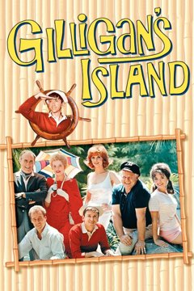

BY CHANNEL
Every channel's full lineup — the shows that call it home.
 CH 1
CH 1The Silver Screen
Classics from the black & white eratonight →
CH 1
The Silver Screen
Classics from the black & white era

The Munsters
1964 · 73 episodes · TV-PG

The Twilight Zone
1959 · 156 episodes · TV-14
 CH 3
CH 3MachoVision
Wrestling legends, all match longtonight →
CH 3
MachoVision
Wrestling legends, all match long
WrestleMania
· 2 episodes
 CH 5
CH 5The Fifth Dimension
Sci-fi & strange talestonight →
CH 5
The Fifth Dimension
Sci-fi & strange tales

Quantum Leap
1989 · 96 episodes · TV-PG
The Twilight Zone
1959 · 156 episodes · TV-14
 CH 6
CH 6Saturday Morning
Cartoons & cereal energytonight →
CH 6
Saturday Morning
Cartoons & cereal energy

Jem and the Holograms
1985 · 39 episodes · TV-Y7

Pee-wee's Playhouse
1986 · 48 episodes · TV-PG

Power Rangers
1993 · 145 episodes · TV-Y7

Teenage Mutant Ninja Turtles
1987 · 191 episodes · TV-Y7
 CH 4
CH 4Taba TV
Tabitha's hand-picked favoritestonight →
CH 4
Taba TV
Tabitha's hand-picked favorites

Beverly Hills, 90210
1990 · 277 episodes · TV-14

The Fresh Prince of Bel-Air
1990 · 146 episodes · TV-PG
Jem and the Holograms
1985 · 39 episodes · TV-Y7

The Wonder Years
1988 · 116 episodes · TV-PG
 CH 8
CH 8TGIF (Fridays)
Feel-good sitcoms, Fridays 6 PM to midnighttonight →
CH 8
TGIF (Fridays)
Feel-good sitcoms, Fridays 6 PM to midnight
The Fresh Prince of Bel-Air
1990 · 146 episodes · TV-PG

The Goldbergs (2013)
2013 · 71 episodes · TV-14

Raising Hope
2010 · 44 episodes · TV-14

Saved by the Bell
1989 · 78 episodes · TV-G
 CH 20
CH 20Y2K
Hits of the 2000s & beyondtonight →
CH 20
Y2K
Hits of the 2000s & beyond

Glee
2009 · 22 episodes · TV-PG
The Goldbergs (2013)
2013 · 71 episodes · TV-14
Raising Hope
2010 · 44 episodes · TV-14

Schitt's Creek
2015 · 80 episodes · TV-14
 CH 45
CH 45The Jukebox
Music, musicals & concertstonight →
CH 45
The Jukebox
Music, musicals & concerts
Glee
2009 · 22 episodes · TV-PG
 CH 70
CH 70Groovy TV
The far-out 60s & 70stonight →
CH 70
Groovy TV
The far-out 60s & 70s

The Brady Bunch
1969 · 25 episodes · TV-G

Gilligan's Island
1964 · 63 episodes · TV-G
The Munsters
1964 · 73 episodes · TV-PG

Saturday Night Live
1975 · 24 episodes · TV-14

That '70s Show
1998 · 200 episodes · TV-PG
 CH 75
CH 75Late Nite
Sketch comedy after hourstonight →
CH 75
Late Nite
Sketch comedy after hours

In Living Color
1990 · 66 episodes · TV-14

Robot Chicken
2005 · 110 episodes · TV-MA
Saturday Night Live
1975 · 24 episodes · TV-14
 CH 80
CH 80I ♥ 80s
80s favorites, neon includedtonight →
CH 80
I ♥ 80s
80s favorites, neon included

ALF
1986 · 51 episodes · TV-G
The Goldbergs (2013)
2013 · 71 episodes · TV-14
Jem and the Holograms
1985 · 39 episodes · TV-Y7
Pee-wee's Playhouse
1986 · 48 episodes · TV-PG
Teenage Mutant Ninja Turtles
1987 · 191 episodes · TV-Y7
The Wonder Years
1988 · 116 episodes · TV-PG
 CH 90
CH 90The Peach Pit
All 90210, all the timetonight →
CH 90
The Peach Pit
All 90210, all the time
Beverly Hills, 90210
1990 · 277 episodes · TV-14
 CH 95
CH 95Prime Time
The 90s blocktonight →
CH 95
Prime Time
The 90s block
Beverly Hills, 90210
1990 · 277 episodes · TV-14
The Fresh Prince of Bel-Air
1990 · 146 episodes · TV-PG
In Living Color
1990 · 66 episodes · TV-14
Saved by the Bell
1989 · 78 episodes · TV-G

Sex and the City
1998 · 95 episodes · TV-MA
 CH 111
CH 111Savage at Nite
Retro sitcoms, all nite longtonight →
CH 111
Savage at Nite
Retro sitcoms, all nite long
ALF
1986 · 51 episodes · TV-G
The Fresh Prince of Bel-Air
1990 · 146 episodes · TV-PG
The Goldbergs (2013)
2013 · 71 episodes · TV-14
Raising Hope
2010 · 44 episodes · TV-14
Saved by the Bell
1989 · 78 episodes · TV-G
That '70s Show
1998 · 200 episodes · TV-PG
The Wonder Years
1988 · 116 episodes · TV-PG
 CH 215
CH 215Bel-Air
All Fresh Prince, born and raisedtonight →
CH 215
Bel-Air
All Fresh Prince, born and raised
The Fresh Prince of Bel-Air
1990 · 146 episodes · TV-PG